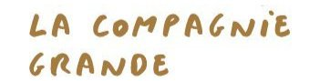
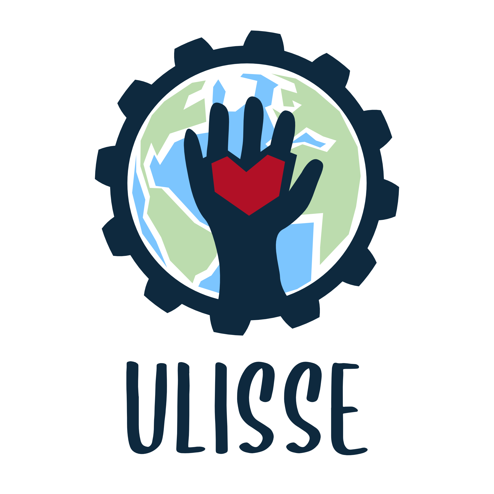
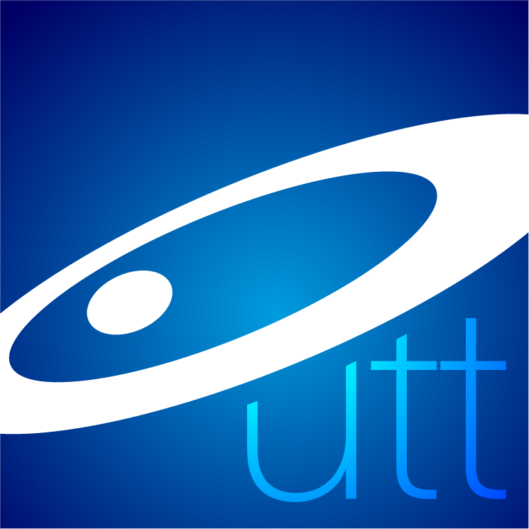
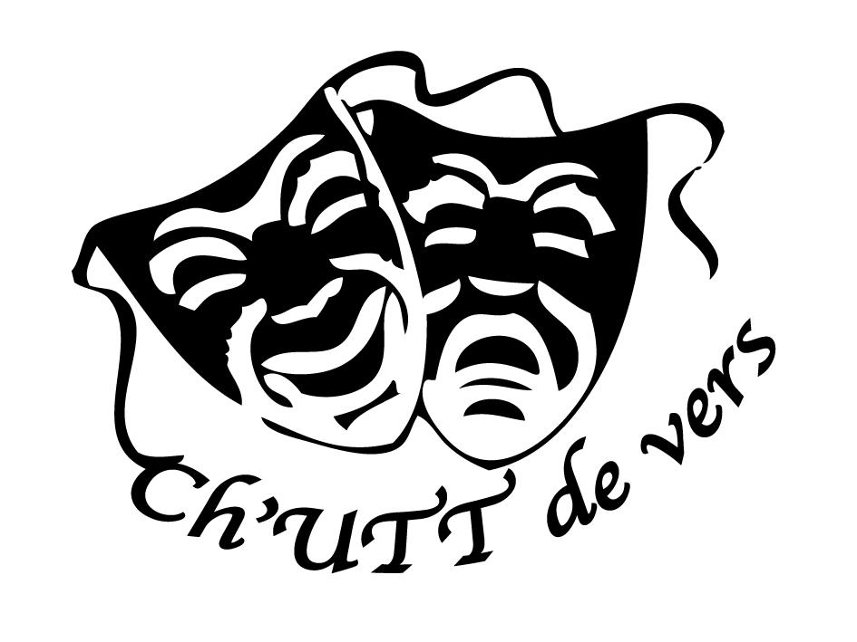
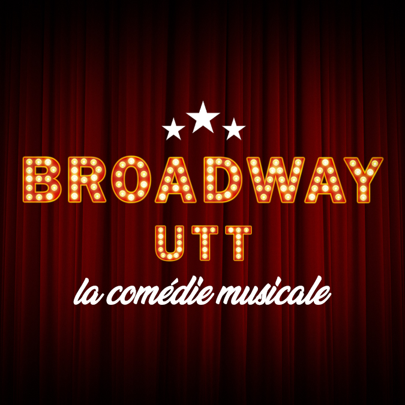
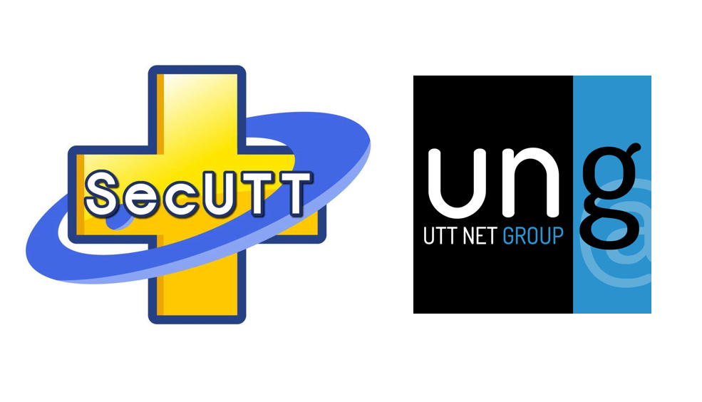

-
IESF
Since 2024, I have joined Ingénieurs et Scientifiques de France (IESF), as a member of the "Doctors-Engineers" committee. IESF is the historical public-interest association (since 1860) representing engineers and researchers in France, in the form of an independant and non-partisan federation.
After taking part in the collective drafting the collective drafting of a note for the management, as part of an intervention at the Ministry of Higher Education and Research, the committee is currently in the process of organising a Scientific Convention on the production and reception of research results (URL). It will follow the model of the previous Scientific Students Convention (URL), which focused on the uses of hydrogen and was based on the principle of the Citizen's Climate Convention. The aim of this new convention will be to bring together master and doctoral students to work together, through expert guidance and deliberation, in order to come up with recommendations on the types of knowledge and the means of knowledge production that need to be developed to further bring science and society closer together.

-

Compagnie Grande
Created in 2021, Compagnie Grande is a puppet theatre and associated arts company based in Château-Renard in the Loiret region (45).
We carry out research into the visual arts, poetry and derision. Our link with the visual arts is expressed in our shows through the use of materials, video, set design, props and objects, to create a poetic, multi-disciplinary form that expresses a narrative through images and associations of ideas.
The language we develop is nourished by the burlesque situations in which our characters find themselves: the expression of uncertainty, fragility and human failings are at the heart of this writing.
-

Ulisse
Ulisse stands for Local Union of Supportive, Social & Ecological Engineering. As an active member of this association (look up their Facebook page).
As a member of this association (2019-2023), I assumed – during one semester – the coordination of the working group related to promoting changes toward sustainability in university restaurants. We designed a survey to identify the potential effectiveness of several adaptations of the uni restaurants, and also engaged discussions with uni restaurants at all level (management & catering workers) to implement new information posters, reusable food container, etc. During another semester, I also co-organized and participated in a public debate regarding the interplay between socio-ecological stakes and political economy.
-

CDDTP
I was elected at the Sustainability, Transistions & Prospective Council (CDDTP) of the University of technology of Troyes (UTT). I helped with other members to determine the exact boundaries, external members and operating procedures of this newly-created council in 2021, on which I participated until the end of my thesis in 2022.
In particular, we drew up an overall assessment and a pathway for UTT to obtain the SD&RS label by the mid-2020s. More specifically, I was responsible for the part that came under L2n, the host laboratory for my PhD, while supporting the other areas – having previously followed the materials engineering course at UTT. I also wrote an introduction to the current state of cross-disciplinary research in nanosciences/life cycle assessment for the L2n lab direction.
-

Ch'UTT de vers
During my university's years (2013-2018), I have been an active member of the Ch'UTT de vers association, involving myself for 4 plays as an actor (of which 1 as co-writer) and 2 as director!
All the plays have been recorded and are available on the Ch'UTT de vers' YouTube's channel or its Facebook page.
-

Broadway UTT
In this ambitious project involving more than 30 people, we tried to stage a musical adapting the famous "1789 : Les Amants de la Bastille" for the June 2020 period, with my personnal role being co-director and actor from September 2019 to March 2020.
The Covid-19 pandemic putted a stop on that and it was sadly abandonned after several months of rehearsal.
-

Other Associations
As presented in the Academic section, I had the chance to give a conference on 2 occasions (2016 & 2017) during Barcamps organized by the UNG (UTT Net Group) association. Each time, it was a way for me to construct and share a reflexion based upon my lectures in Social Sciences & Humanities.
I also have been an active member of SecUTT, the only (at present knowledge) first aid student association fully managed by students. I am a certified first responder level PSE1 (2015) and PSE2 (2016).